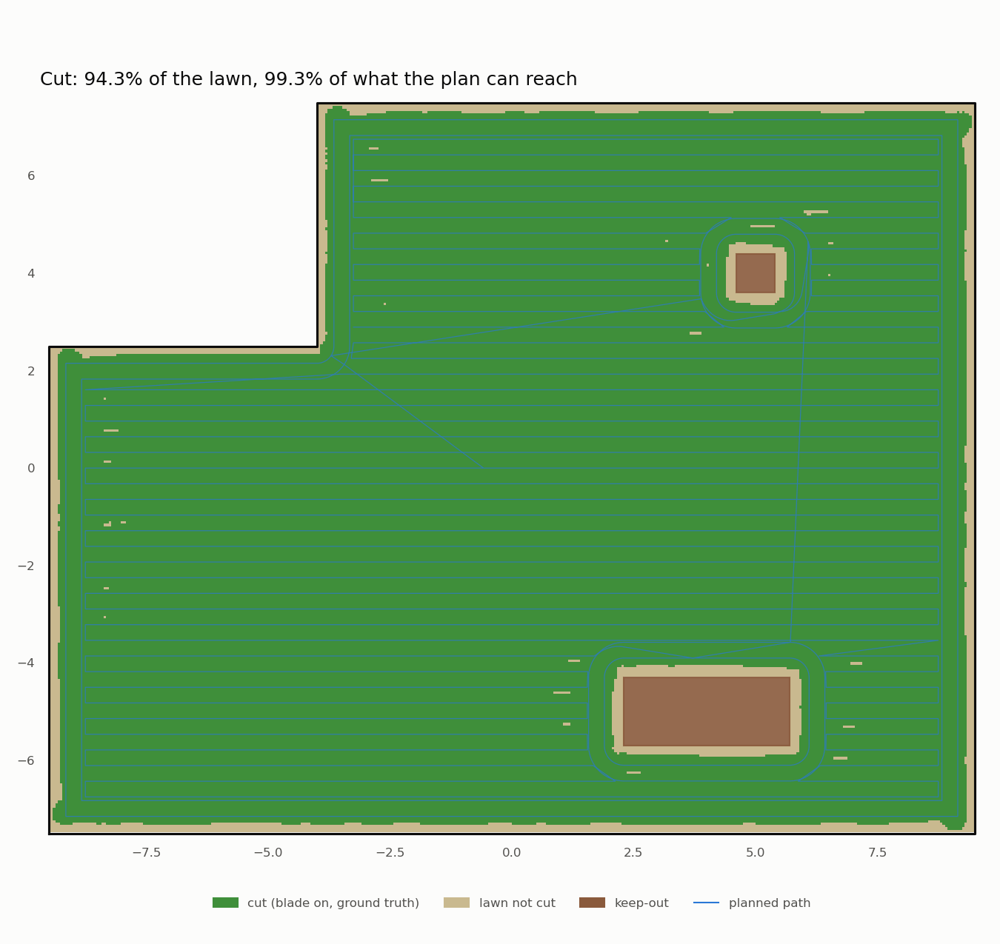

Two buttons, faster turns, and a simulator that stopped telling everyone the time
Three small changes, tested in one simulator run instead of three: the physical buttons from the
controls spec (docs/controls.md) now exist in the sim, the robot turns faster at the end of each stripe, and the
simulator runs 2.4× faster than real time without changing a single result.
Two buttons, no app
The rule from the plan: the phone is optional, the buttons are not. The robot has a red STOP and one
HOME/GO button, plus a light ring. The gestures are a small, pure state machine (mowbot_ui/gestures.py) with
one unit test per row of the gesture table:
| Gesture | Does |
|---|---|
| STOP pressed | Latch the stop: wheels and blade off. Nothing moves until it's released |
| GO held 2 s while stopped | Release the stop, into paused: it never drives off on its own |
| GO short press | Pause / resume |
| GO held 2 s | Go home and wait at the dock |
| STOP + GO held 5 s | Bluetooth pairing (the ring blinks blue) |
| GO held 10 s | Soft reset |
In the sim, a button_player node presses the buttons from a script, timed from the mission's start, so a
button experiment is repeatable. A new report, analysis/ui_report.py, checks each press against ground truth:
| Check (ui-test-2) | Expected | Measured |
|---|---|---|
| STOP pressed while mowing: standstill | ≤ 1.0 s | 0.22 s |
| Blade below 10% of speed | yes | 0.02 s (the sim blade has no inertia: on hardware this is the number that matters, and it gets measured at gate 3) |
| Moved while STOP latched | ≤ 2 cm | 0.0 cm |
| Released STOP (GO held 2 s): moved before a resume | 0 | 0.0 cm |
| Light ring while latched | red, solid | red, solid |
| GO held 2 s while mowing: docked | yes | after 25 s |
| …then waits on the dock until GO | yes | yes: 104 s on the charger, then back to the exact spot it left |
Found by the second run: the robot that wouldn't leave
After "go home", a short GO press is supposed to send the robot back out. In ui-test-1 it sat on the charger
forever. The gesture machine had marked the robot not paused after "go home", so the short press sent
pause, which the mission rightly ignores on the dock. Now "go home" counts as a hold, and a unit test pins
the sequence.
The safety gate honours the latch itself, not the mission: while STOP is latched it publishes zero speed and zero blade every 0.1 s, whatever anything upstream asks for. On the real robot the button also cuts power in hardware; the software latch is the second layer, not the only one.
Found by the first run: a method name
The first run's button presses did nothing. The ui_controls node had died at launch: I'd named a method
handle, which silently replaced rclpy's own Node.handle. The unit tests never constructed the node, so
they passed. Now a smoke test constructs every node, and a 2-minute sim run isn't how we find a typo-class bug.
Faster turns
At the end of each stripe the robot slowed to 0.2 m/s a full metre before the corner and pivoted at 0.6 rad/s. Turning cost about 30% of the mowing time. Rather than tune in the simulator (minutes per try), the offline replay swept the gains in seconds, with RTK-like noise:
| Pivot | Slow zone | Slow speed | Test patch time | Worst cross-track |
|---|---|---|---|---|
| 0.6 rad/s | 1.0 m | 0.2 m/s | 475 s | 17.8 cm (noisy replay) |
| 1.0 rad/s | 0.5 m | 0.3 m/s | 354 s (−25%) | 15.9 cm |
| 1.5 rad/s | slower | it overshoots and pivots again |
Faster pivots aren't always faster: with 2 rad/s² of angular acceleration, 1.5 rad/s overshoots and turns back.
The replay of the whole back yard then found one spot 12.6 cm off the line: a U-turn with a short diagonal link between stripes. The robot pivoted at the first kink (148°) but only arced round the second (32°), because a pivot needs more than 40° of heading error. Slowing down didn't help; the arc was the problem. Now, at a corner's vertex, a pivot starts at 17°. Worst cross-track on the back yard: back under 10 cm.
Then the simulator, which is the judge:
| Test patch | Before (power-test-3) | After (ui-test-2) |
|---|---|---|
| Time in the MOW phase | 484 s | 428 s (−12%) |
| Coverage of the reachable area | 95.5% | 97.3% |
| Worst cross-track while mowing | — | 8.4 cm (limit 15) |
| Localization error | — | 2.2 cm RMS, 7.0 cm max |
Twelve per cent, not the twenty-five the replay promised. We haven't pinned down why. Our best guess: the replay's robot is a kinematic model that follows the acceleration limits exactly and never slips, and the faster gains spend more of each turn accelerating and braking, where the model and Gazebo differ most. (Both runs were also interrupted mid-mission, one by a low battery and one by the buttons, so they aren't perfectly like for like.) The replay is still the right tool for ranking gains in seconds; the sim gives the number we quote.
A faster simulator
Every node runs on simulation time, so the simulator doesn't have to run at real time: a new rtf launch argument
sets Gazebo's real-time factor, and 0 means "as fast as you can". The first try only reached 1.7× real time, on
a 32-core machine that was mostly idle. So: what was busy? top, during a run:
| Process | CPU before | Why |
|---|---|---|
| Gazebo (physics + sensors) | 200% | the actual simulation |
| each of ~12 Python nodes | 70–110% | woken by /clock, 1,714 times a second |
| the Elasticsearch shipper | 110% | decoding every /joint_states message before throttling to 2 Hz |
Gazebo publishes /clock and /joint_states once per 1 ms physics step. At 1.7× that's 1.7 kHz, and every node on
sim time subscribes to /clock. Most of the machine was spent telling a dozen programs what time it was.
The fix is one small node, sim_throttle: Gazebo's clock and joint states now arrive as /clock_raw and
/joint_states_raw, and it republishes them at 100 Hz and 50 Hz of sim time. Nothing needs finer: the fastest
control loop is 20 Hz, and every sensor message carries Gazebo's own timestamp. (The joint-state plugin has an
update_rate setting; we tried it first. This Gazebo version ignores it, measured at 1000 Hz.)
We also stopped rendering what nobody looks at: lean:=true (the default for make mow-run) drops the cameras and
the lidar the safety gate isn't using. That one barely mattered, about 5%: a reminder to measure before optimising.
| Same scripted test-patch mission (~600 s of sim time) | Whole make mow-run, wall time |
Real-time factor while mowing |
|---|---|---|
| real time (before) | ~11 min (estimated: 600 s + setup and reports) | 1.0× |
rtf:=0 (ui-test-1, stopped early by a bug) |
— | 1.7× |
+ lean (ui-test-2) |
436 s | 1.8× |
+ sim_throttle (ui-test-3) |
344 s | ≈ 2.4× |
The results didn't change: 97.3% vs 97.2% coverage, 2.2 vs 2.3 cm localization error, 0.22 vs 0.21 s to stop. Now the physics itself is the busiest process. The next step would be a coarser physics step, which changes the dynamics, so it needs its own experiment, not a speed tweak.
The back yard, and a bug that wasn't the new gains
With a 2.4× simulator, the whole back yard (252 m², 830 m of path, 38 minutes of mowing) takes 16 minutes of wall time instead of about 40. Its first run, backyard-2, covered 98.7% of the reachable lawn, but failed one check: 16.2 cm off the line, against a 15 cm limit.
The new gains were the obvious suspect. They weren't to blame. The coverage report now says where the worst point is (8.42, 6.99), and the recorded bag says what happened there:
- Running along the outer lap at 0.5 m/s, 0.9 m short of a corner, the mission suddenly commanded a pivot.
- Its position estimate was fine (2 cm off), and so was its heading. Fed the same poses offline, the follower did the same thing, so it was deterministic.
- The cause was
Polyline.project, which finds "how far along the path am I". It searches only forward, so the robot can never skip to a neighbouring stripe, and it rejected any point more than 5 cm behind the last answer. An RTK correction had just moved the estimate 6 cm backwards. The robot's own spot on the lap was rejected, and the only candidate left in the 1.5 m search window was the corner, 1.4 m away. So "how far along" jumped to the corner, and the robot turned for a corner it hadn't reached.
This needs two coincidences, a backwards correction just as a corner enters the window, which is why earlier runs never showed it. The fix: when the robot is slightly behind, hold the position where it was instead of throwing the candidate away. A unit test reproduces the exact geometry.
| Back yard | backyard-2 | backyard-3 (the fix) |
|---|---|---|
| Coverage of the reachable area | 98.7% | 99.3% |
| Worst cross-track while mowing | 16.2 cm ❌ | 9.7 cm |
| Keep-out incursions | 0 | 0 |
| Localization | 2.5 cm RMS | 2.5 cm RMS |
| Docked at the end | first try | first try |
| Sim time / wall time | 2273 s / 989 s | 2207 s / 953 s |

Batching
The three changes went into one run: the buttons, the new gains and the speed-up are all measured by the same recorded bag, by four reports (coverage, power, localization, controls). A failure in any of them is still attributable, because each report checks one thing.